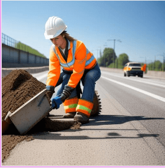
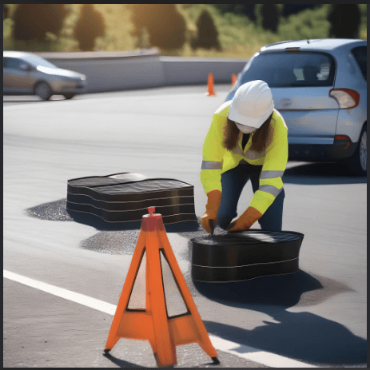

Objetivos Generales

La construcción de caminos es una disciplina de la ingeniería que demanda constantemente mayores conocimientos técnicos y científicos, debido al uso de materiales cada vez más complejos y la operación de equipos y maquinaria avanzada. Las inversiones necesarias para construir carreteras son significativas, por lo que es esencial asegurar que los diseños se ajusten a normativas aprobadas, que los materiales empleados cumplan con las especificaciones previstas, y que los controles de calidad se ejecuten de manera uniforme y confiable. Cuento con la capacidad, entrenamiento y experiencia necesarios para llevar a cabo estas labores, garantizando un proceso riguroso y ajustado a los estándares requeridos.
Los materiales naturales y preparados utilizados en la construcción de carreteras son evaluados a través de parámetros específicos, determinados mediante ensayes de laboratorio o mediciones directas en el terreno. Al planificar el control de calidad, es crucial tener en cuenta que los resultados obtenidos pueden ser altamente sensibles a los procedimientos aplicados durante los ensayos. Variaciones mínimas en los métodos pueden generar diferencias significativas en los resultados. Por ello, es fundamental que el trabajo se ejecute estrictamente de acuerdo con normas predefinidas, permitiendo la comparación de resultados a lo largo del tiempo. Estoy plenamente capacitado y con la experiencia necesaria para asegurar que estos controles se realicen de manera precisa y conforme a los estándares exigidos.
Objetivos:
- Establecer Especificaciones Técnicas: Desarrollar y proporcionar especificaciones precisas para los materiales y procedimientos constructivos, asegurando que cumplan con los estándares de calidad requeridos para el diseño de obras viales.
- Verificación de Normativa Vigente: Asegurar el cumplimiento estricto de las normativas vigentes y del contrato en la selección y aplicación de materiales y métodos de construcción, tanto en laboratorio como en terreno.
- Control de Calidad Integral: Implementar un control de calidad integral en todas las etapas del proyecto, desde la selección de materiales hasta la ejecución de los procedimientos constructivos, verificando que se sigan las especificaciones establecidas.
- Supervisión en Terreno: Realizar inspecciones regulares en terreno para verificar la correcta implementación de los procedimientos constructivos y el uso adecuado de los materiales, identificando y corrigiendo cualquier desviación a tiempo.
- Ensayes y Pruebas de Materiales: Realizar ensayos y pruebas de materiales en laboratorio y campo para asegurar que los mismos cumplan con las propiedades especificadas y los requerimientos del proyecto.
- Documentación y Reportes: Elaborar informes detallados y documentar los resultados de las pruebas y verificaciones realizadas, proporcionando recomendaciones y sugerencias para optimizar la calidad de las obras.
- Capacitación y Mejora Continua: Capacitar al personal técnico y de campo en las especificaciones de los materiales y procedimientos, promoviendo la mejora continua en la implementación de prácticas que aseguren la calidad en la ejecución de las obras.
